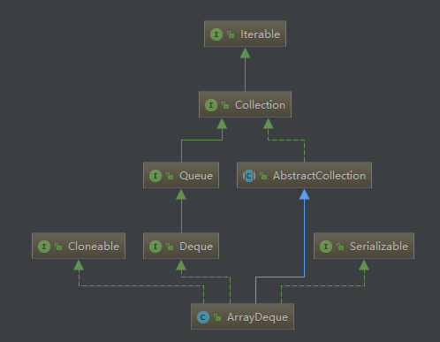
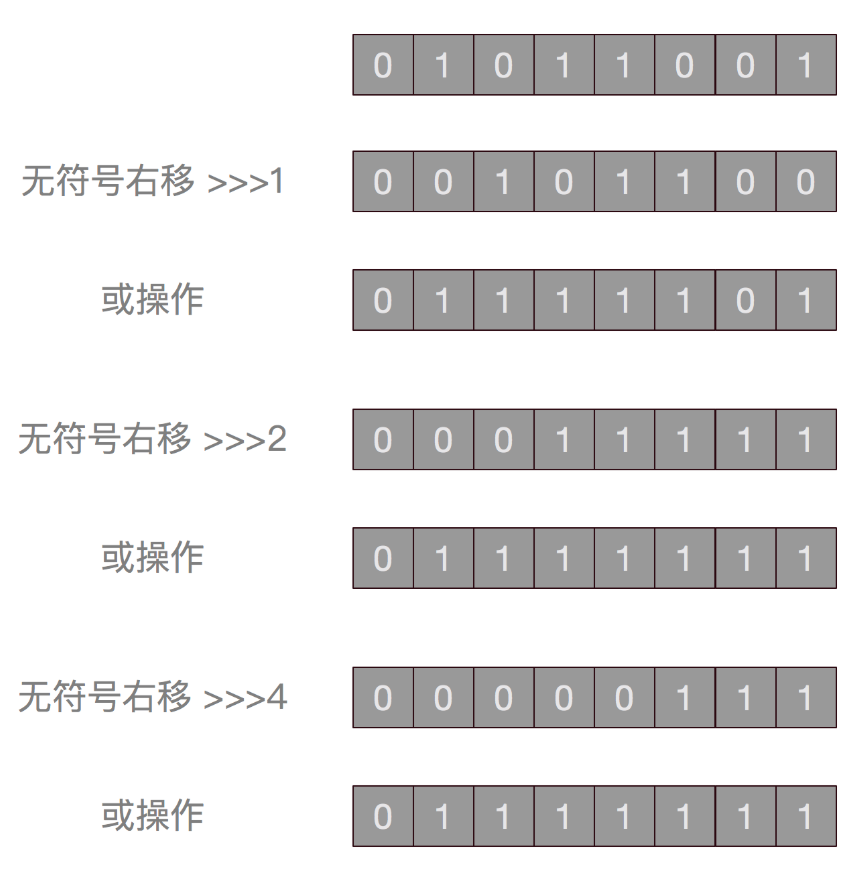
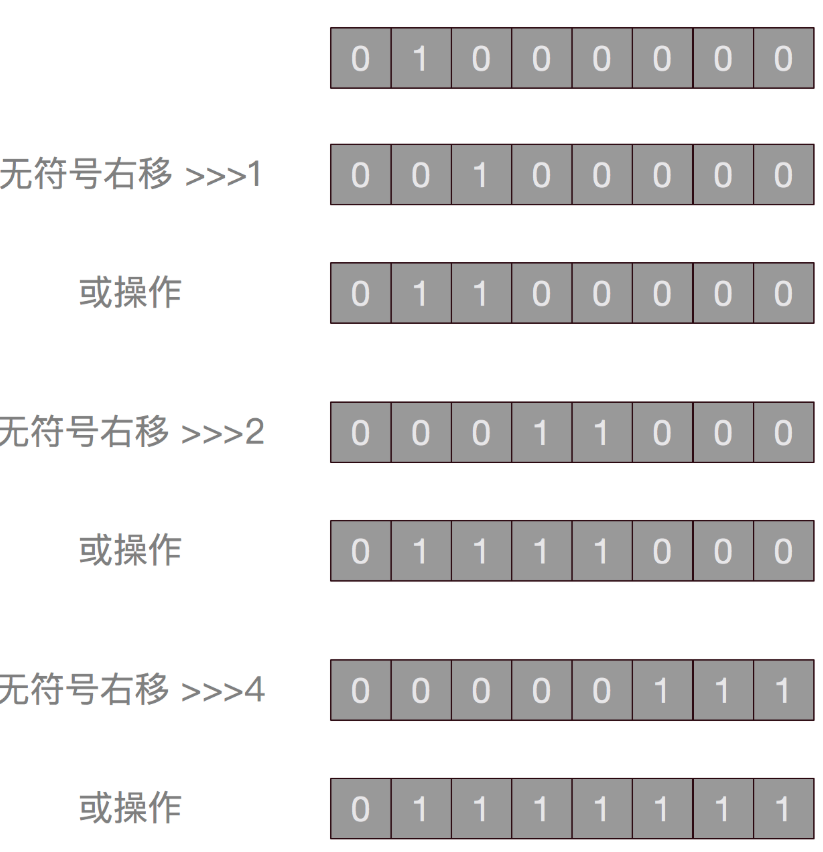
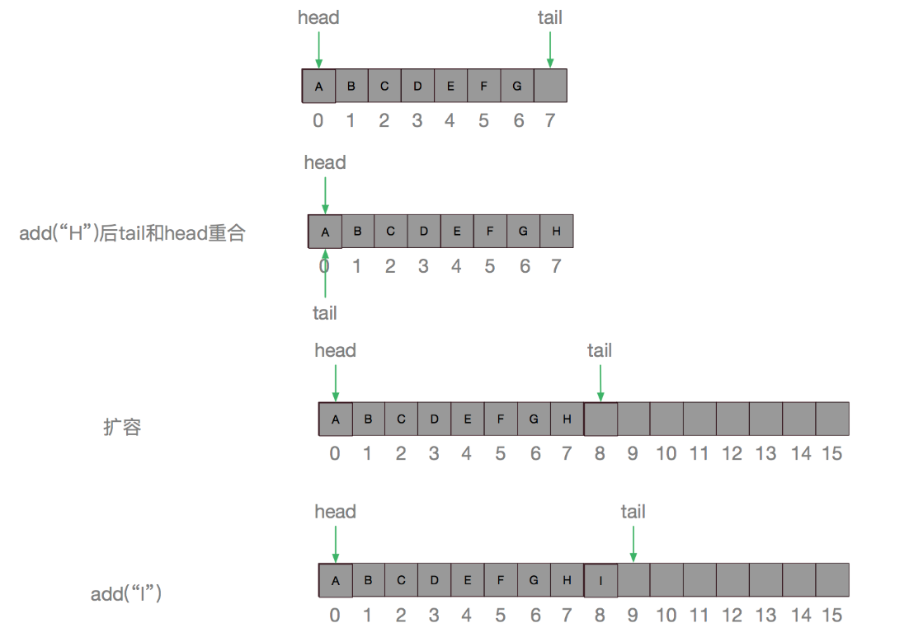

今天来介绍一个不太常见也不太常用的类——ArrayDeque，这是一个很不错的容器类，如果对它还不了解的话，那么就好好看看这篇文章吧。
看完本篇，你将会了解到：
1、ArrayDeque是什么？
2、ArrayDeque如何使用？
3、ArrayDeque的内部结构是怎样的？
4、ArrayDeque的各个方法是如何实现的？
5、ArrayDeque是如何扩容的？
6、ArrayDeque的容量有什么限制？
7、ArrayDeque和LinkedList相比有什么优势？
8、ArrayDeque的应用场景是什么？
ArrayDeque简介
ArrayDeque是JDK容器中的一个双端队列实现，内部使用数组进行元素存储，不允许存储null值，可以高效的进行元素查找和尾部插入取出，是用作队列、双端队列、栈的绝佳选择，性能比LinkedList还要好。听到这里，不熟悉ArrayDeque的你是不是有点尴尬？JDK中竟然还有这么好的一个容器类？
别慌，现在了解还来得及，趁响指还没有弹下去，快上车吧，没时间解释了
来看一个ArrayDeque的使用小栗子：
public class DequeTest {
public static void main(String[] args){
// 初始化容量为4
ArrayDeque<String> arrayDeque = new ArrayDeque<>(4);
//添加元素
arrayDeque.add("A");
arrayDeque.add("B");
arrayDeque.add("C");
arrayDeque.add("D");
arrayDeque.add("E");
arrayDeque.add("F");
arrayDeque.add("G");
arrayDeque.add("H");
arrayDeque.add("I");
System.out.println(arrayDeque);
// 获取元素
String a = arrayDeque.getFirst();
String a1 = arrayDeque.pop();
String b = arrayDeque.element();
String b1 = arrayDeque.removeFirst();
String c = arrayDeque.peek();
String c1 = arrayDeque.poll();
String d = arrayDeque.pollFirst();
String i = arrayDeque.pollLast();
String e = arrayDeque.peekFirst();
String h = arrayDeque.peekLast();
String h1 = arrayDeque.removeLast();
System.out.printf("a = %s, a1 = %s, b = %s, b1 = %s, c = %s, c1 = %s, d = %s, i = %s, e = %s, h = %s, h1 = %s", a,a1,b,b1,c,c1,d,i,e,h,h1);
System.out.println();
// 添加元素
arrayDeque.push(e);
arrayDeque.add(h);
arrayDeque.offer(d);
arrayDeque.offerFirst(i);
arrayDeque.offerLast(c);
arrayDeque.offerLast(h);
arrayDeque.offerLast(c);
arrayDeque.offerLast(h);
arrayDeque.offerLast(i);
arrayDeque.offerLast(c);
System.out.println(arrayDeque);
// 移除第一次出现的C
arrayDeque.removeFirstOccurrence(c);
System.out.println(arrayDeque);
// 移除最后一次出现的C
arrayDeque.removeLastOccurrence(c);
System.out.println(arrayDeque);
}
}输出如下：
[A, B, C, D, E, F, G, H, I]
a = A, a1 = A, b = B, b1 = B, c = C, c1 = C, d = D, i = I, e = E, h = H, h1 = H
[I, E, E, F, G, H, D, C, H, C, H, I, C]
[I, E, E, F, G, H, D, H, C, H, I, C]
[I, E, E, F, G, H, D, H, C, H, I]可以看到，从ArrayDeque中取出元素的姿势可谓是五花八门，不过别慌，稍后会对这些方法进行一一讲解，现在只需要知道，get、peek、element方法都是获取元素，但是不会将它移除，而pop、poll、remove都会将元素移除并返回，add和push、offer都是插入元素，它们的不同点在于插入元素的位置以及插入失败后的结果。
ArrayDeque的内部结构
ArrayDeque的整体继承结构如下：

ArrayDeque是继承自Deque接口，Deque继承自Queue接口，Queue是队列，而Deque是双端队列，也就是可以从前或者从后插入或者取出元素，也就是比队列存取更加方便一点，单向队列只能从一头插入，从另一头取出。
再来看看ArrayDeque的内部结构，其实从名字就可以看出来，ArrayDeque自然是基于Array的双端队列，内部结构自然是数组：
//存储元素的数组
transient Object[] elements; // 非private访问限制，以便内部类访问
/**
* 头部节点序号
*/
transient int head;
/**
* 尾部节点序号，（指向最后一点节点的后一个位置）
*/
transient int tail;
/**
* 双端队列的最小容量，必须是2的幂
*/
private static final int MIN_INITIAL_CAPACITY = 8;这里可以看到，元素都存储在Object数组中，head记录首节点的序号，tail记录尾节点后一个位置的序号，队列的容量最小为8，而且必须为2的幂。看到这里，有没有想到HashMap的元素个数限制也必须为2的幂，嗯，这里同HashMap一样，自有妙用，后面会有分析
ArrayDeque的常用方法
| 从队列首部插入/取出 | 从队列尾部插入/取出 | |||
|---|---|---|---|---|
| 失败抛出异常 | 失败返回特殊值 | 失败抛出异常 | 失败返回特殊值 | |
| 插入 | addFirst(e) push() | offerFirst(e) | addLast(e) | offerLast(e) |
| 移除 | removeFirst() pop() | pollFirst() | removeLast() | pollLast() |
| 获取 | getFirst() | peekFirst() | getLast() | peekLast() |
嗯，几乎绝大多数常用方法都在这里了，基本上可以分成两类，一类是以add，remove，get开头的方法，这类方法失败后会抛出异常，一类是以offer，poll，peek开头的方法，这类方法失败之后会返回特殊值，如null。大部分方法基本上都是可以根据命名来推断其作用，如addFirst，当然就是从队列头部插入，removeLast，便是从队列尾部移除，get和peek只获取元素而不移除，getFirst方法调用时，如果队列为空，会抛出NoSuchElementException异常，而peekFirst在队列为空时调用则返回null。
一下摆出这么多方法有些难以接受？别慌别慌，接下来让我们从源码的角度一起来看看这些方法，用图说话，来解释我们最开始那个栗子中到底发生了哪些事情
ArrayDeque源码分析
先来看看构造函数：
/**
* 构造一个初始容量为16的空队列
*/
public ArrayDeque() {
elements = new Object[16];
}
/**
* 构造一个能容纳指定大小的空队列
*/
public ArrayDeque(int numElements) {
allocateElements(numElements);
}
/**
* 构造一个包含指定集合所有元素的队列
*/
public ArrayDeque(Collection<? extends E> c) {
allocateElements(c.size());
addAll(c);
}所以之前栗子中，
ArrayDeque<String> arrayDeque = new ArrayDeque<>(4);调用的是第二个构造函数，里面有这么一个函数allocateElements，让我们来看看它的实现：
1 private void allocateElements(int numElements) {
2 elements = new Object[calculateSize(numElements)];
3 }
4
5 private static int calculateSize(int numElements) {
6 int initialCapacity = MIN_INITIAL_CAPACITY;
7 if (numElements >= initialCapacity) {
8 initialCapacity = numElements;
9 initialCapacity |= (initialCapacity >>> 1);
10 initialCapacity |= (initialCapacity >>> 2);
11 initialCapacity |= (initialCapacity >>> 4);
12 initialCapacity |= (initialCapacity >>> 8);
13 initialCapacity |= (initialCapacity >>> 16);
14 initialCapacity++;
15
16 if (initialCapacity < 0)
17 initialCapacity >>>= 1;
18 }
19 return initialCapacity;
20 }allocateElements方法主要用于给内部的数组分配合适大小的空间，calculateSize方法用于计算比numElements大的最小2的幂次方，如果指定的容量大小小于MIN_INITIAL_CAPACITY（值为8），那么将容量设置为8，否则通过多次无符号右移进行最小2次幂计算。先将initialCapacity赋值为numElements，接下来，进行5次无符号右移，下面将以一个小栗子介绍这样运算的妙处
在Java中，int类型是占4字节，也就是32位。简单起见，这里以一个8位二进制数来演示前三次操作。假设这个二进制数对应的十进制为89，整个过程如下：

可以看到最后，除了第一位，其他位全部变成了1，然后这个结果再加一，即得到大于89的最小的2次幂，怎么样，很巧妙吧，也许你会想，为什么右移的数值要分别是1，2，4，8，16呢？嗯，好问题。其实仔细观察就会发现，先右移在进行或操作，其实我们只需要关注第一个不为0的位即可，下面以64为例再演示一次：

所以，事实上，在这系列操作中，其他位只是配角，我们只需要关注第一个不为0的位即可，假设其为第n位，先右移一位然后进行或操作，得到的结果，第n位和第n-1位肯定为1，这样就有两个位为1了，然后进行右移两位，再进行或操作，那么第n位到第n-3位一定都为1，然后右移4位，依次类推。int为32位，因此，最后只需要移动16位即可。1+2+4+8+16 = 31，所以经过这一波操作，原数字对应的二进制，操作得到的结果将是从其第一个不为0的位开始，往后的位均为1。然后：
initialCapacity++;再自增一下，目标完成。观察到还有下面这一小节代码：
if (initialCapacity < 0)
initialCapacity >>>= 1;其实它是为了防止进行这一波操作之后，得到了负数，即原来第31位为1，得到的结果第32位将为1，第32位为符号位，1代表负数，这样的话就必须回退一步，将得到的数右移一位（即2 ^ 30）。 嗯，那么这一部分就先告一段落了。
来看看之前的那些函数。
public boolean add(E e) {
addLast(e);
return true;
}
/**
* 在队列头部插入元素，如果元素为null，则抛出异常
*/
public void addFirst(E e) {
if (e == null)
throw new NullPointerException();
elements[head = (head - 1) & (elements.length - 1)] = e;
if (head == tail)
doubleCapacity();
}
/**
* 在队列尾部插入元素，如果元素为null，则抛出异常
*/
public void addLast(E e) {
if (e == null)
throw new NullPointerException();
elements[tail] = e;
if ( (tail = (tail + 1) & (elements.length - 1)) == head)
doubleCapacity();
}add的几个函数比较简单，在头部或者尾部插入元素，如果直接调用add方法，则是在尾部插入，这时直接在对应位置塞入该元素即可。
elements[tail] = e;然后把tail记录其后一个位置，如果tail记录的位置已经是数组的最后一个位置了怎么办？嗯，这里又有一个巧妙的操作，跟HashMap中的取模是一样的：
tail = (tail + 1) & (elements.length - 1)因为elements.length是2的幂次方，所以减一后就变成了掩码，tail如果记录的是最后一个位置，即 elements.length - 1，tail + 1 则等于elements.length，与 elements.length - 1 做与操作后，就变成了0，嗯，没错，这样就变成了一个循环数组，如果tail与head相等，则表示没有剩余空间可以存放更多元素了，则调用doubleCapacity进行扩容：
private void doubleCapacity() {
assert head == tail;
int p = head;
int n = elements.length;
int r = n - p; // number of elements to the right of p
int newCapacity = n << 1;
if (newCapacity < 0)
throw new IllegalStateException("Sorry, deque too big");
Object[] a = new Object[newCapacity];
System.arraycopy(elements, p, a, 0, r);
System.arraycopy(elements, 0, a, r, p);
elements = a;
head = 0;
tail = n;
}扩容其实也是很简单粗暴的，先记录一下原来head的位置，然后把容量变为原来的两倍，然后把head之后的元素复制到新数组的开头，把剩余的元素复制到新数组之后。以之前的栗子为例，新建的ArrayDeque实例容量为8，然后我们调用add插入元素，插入H之后，tail指向第一个位置，与head重合，就会触发扩容。
arrayDeque.add("A");
arrayDeque.add("B");
arrayDeque.add("C");
arrayDeque.add("D");
arrayDeque.add("E");
arrayDeque.add("F");
arrayDeque.add("G");
arrayDeque.add("H");
arrayDeque.add("I");
看图应该就比较清楚了，然后来看看获取元素的几个方法：
// 获取元素
String a = arrayDeque.getFirst();
String a1 = arrayDeque.pop();
String b = arrayDeque.element();
String b1 = arrayDeque.removeFirst();
String c = arrayDeque.peek();
String c1 = arrayDeque.poll();
String d = arrayDeque.pollFirst();
String i = arrayDeque.pollLast();
String e = arrayDeque.peekFirst();
String h = arrayDeque.peekLast();
String h1 = arrayDeque.removeLast();
System.out.printf("a = %s, a1 = %s, b = %s, b1 = %s, c = %s, c1 = %s, d = %s, i = %s, e = %s, h = %s, h1 = %s", a,a1,b,b1,c,c1,d,i,e,h,h1);
System.out.println();getFirst方法直接取head位置的元素，如果为null则抛出异常。
public E getFirst() {
@SuppressWarnings("unchecked")
E result = (E) elements[head];
if (result == null)
throw new NoSuchElementException();
return result;
}getLast也是类似，取出tail所在位置的前一个位置，这里也做了掩码操作。
public E getLast() {
@SuppressWarnings("unchecked")
E result = (E) elements[(tail - 1) & (elements.length - 1)];
if (result == null)
throw new NoSuchElementException();
return result;
}element方法直接调用的是getFirst方法：
public E element() {
return getFirst();
}remove方法有三个：
public E remove() {
return removeFirst();
}
public E removeFirst() {
E x = pollFirst();
if (x == null)
throw new NoSuchElementException();
return x;
}
public E removeLast() {
E x = pollLast();
if (x == null)
throw new NoSuchElementException();
return x;
}remove方法其实是调用的对应的poll方法，poll方法也有三个：
public E poll() {
return pollFirst();
}
public E pollFirst() {
int h = head;
@SuppressWarnings("unchecked")
E result = (E) elements[h];
// 如果结果为null则返回null
if (result == null)
return null;
elements[h] = null; // Must null out slot
head = (h + 1) & (elements.length - 1);
return result;
}
public E pollLast() {
int t = (tail - 1) & (elements.length - 1);
@SuppressWarnings("unchecked")
E result = (E) elements[t];
if (result == null)
return null;
elements[t] = null;
tail = t;
return result;
}其实也很简单，都是先取出对应的元素，如果为null则返回null，否则取出对应的元素并对head或tail进行调整。
pop方法调用的是removeFirst方法，removeFIrst方法调用的是pollFirst方法，所以方法看起来这么多，实际上最后真正调用的就那么几个
public E pop() {
return removeFirst();
}peek方法是取出元素但是不移除，也有三个方法：
public E peek() {
return peekFirst();
}
@SuppressWarnings("unchecked")
public E peekFirst() {
// elements[head] is null if deque empty
return (E) elements[head];
}
@SuppressWarnings("unchecked")
public E peekLast() {
return (E) elements[(tail - 1) & (elements.length - 1)];
}这里没有做任何校验，所以如果如果取到的元素是null，返回的也是null。
再来看看插入元素的其它几个方法：
public boolean offer(E e) {
return offerLast(e);
}
public boolean offerLast(E e) {
addLast(e);
return true;
}
public boolean offerFirst(E e) {
addFirst(e);
return true;
}
public void push(E e) {
addFirst(e);
} offer方法直接调用的是add方法。
emmm，都是相互调用，为啥要设置那么多方法呢？其实主要是为了模拟不同的数据结构，如栈操作：pop，push，peek，队列操作：add，offer，remove，poll，peek，element，双端队列操作：addFirst，addLast，getFirst，getLast，peekFirst，peekLast，removeFirst，removeLast，pollFirst，pollLast。不过确实稍微多了一点。
之前的栗子里还有用到两个方法，removeFirstOccurrence和removeLastOccurrence，前者是移除首次出现的位置，后者是移除最后一次出现的位置。
public boolean removeFirstOccurrence(Object o) {
if (o == null)
return false;
int mask = elements.length - 1;
int i = head;
Object x;
while ( (x = elements[i]) != null) {
if (o.equals(x)) {
delete(i);
return true;
}
i = (i + 1) & mask;
}
return false;
}
public boolean removeLastOccurrence(Object o) {
if (o == null)
return false;
int mask = elements.length - 1;
int i = (tail - 1) & mask;
Object x;
while ( (x = elements[i]) != null) {
if (o.equals(x)) {
delete(i);
return true;
}
i = (i - 1) & mask;
}
return false;
}其实都是通过循环遍历的方式进行查找一个是从head开始往后查找，一个是从tail开始往前查找。
最后，我们再来看看它的迭代器类。
public Iterator<E> iterator() {
return new DeqIterator();
}
private class DeqIterator implements Iterator<E> {
private int cursor = head;
private int fence = tail;
private int lastRet = -1;
public boolean hasNext() {
return cursor != fence;
}
public E next() {
if (cursor == fence)
throw new NoSuchElementException();
@SuppressWarnings("unchecked")
E result = (E) elements[cursor];
if (tail != fence || result == null)
throw new ConcurrentModificationException();
lastRet = cursor;
cursor = (cursor + 1) & (elements.length - 1);
return result;
}
public void remove() {
if (lastRet < 0)
throw new IllegalStateException();
if (delete(lastRet)) {
cursor = (cursor - 1) & (elements.length - 1);
fence = tail;
}
lastRet = -1;
}
public void forEachRemaining(Consumer<? super E> action) {
Objects.requireNonNull(action);
Object[] a = elements;
int m = a.length - 1, f = fence, i = cursor;
cursor = f;
while (i != f) {
@SuppressWarnings("unchecked") E e = (E)a[i];
i = (i + 1) & m;
if (e == null)
throw new ConcurrentModificationException();
action.accept(e);
}
}
}在迭代器类中，cursor记录的是head的位置，fence记录的是tail的位置，lastRet记录的是调用next返回的元素的序号，如果调用了remove方法，lastRet会置为-1，这里没有像其它容器那样使用modCount来实现fast-fail机制，而是通过在next方法中进行修改判断。
// 如果移除了尾部元素，会导致 tail != fence
// 如果移除了头部元素，会导致 result == null
if (tail != fence || result == null)
throw new ConcurrentModificationException();当然，这种检测比较弱，如果先移除一个尾部元素，然后再添加一个尾部元素，那么tail依旧和fence相等，这种情况就检测不出来了。
在调用remove方法的时候，调用了一个delete方法，这是ArrayDeque类中的一个私有方法。
private boolean delete(int i) {
// 先做不变性检测，判断是否当前结构满足删除需求
checkInvariants();
final Object[] elements = this.elements;
// mask即掩码
final int mask = elements.length - 1;
final int h = head;
final int t = tail;
// front代表i到头部的距离
final int front = (i - h) & mask;
// back代表i到尾部的距离
final int back = (t - i) & mask;
// 再次校验，如果i到头部的距离大于等于尾部到头部的距离，表示当前队列已经被修改了，通过最开始检测后，i是不应该满足该条件的
if (front >= ((t - h) & mask))
throw new ConcurrentModificationException();
// 为移动尽量少的元素做优化，如果离头部比较近，则将该位置到头部的元素进行移动，如果离尾部比较近，则将该位置到尾部的元素进行移动
if (front < back) {
if (h <= i) {
System.arraycopy(elements, h, elements, h + 1, front);
} else { // Wrap around
System.arraycopy(elements, 0, elements, 1, i);
elements[0] = elements[mask];
System.arraycopy(elements, h, elements, h + 1, mask - h);
}
elements[h] = null;
head = (h + 1) & mask;
return false;
} else {
if (i < t) { // Copy the null tail as well
System.arraycopy(elements, i + 1, elements, i, back);
tail = t - 1;
} else { // Wrap around
System.arraycopy(elements, i + 1, elements, i, mask - i);
elements[mask] = elements[0];
System.arraycopy(elements, 1, elements, 0, t);
tail = (t - 1) & mask;
}
return true;
}
} 所以这个delete还是花了一点心思的，不仅做了两次校验，还对元素移动进行了优化。嗯，到此为止，源码部分就差不多了。
那么现在再回到最开始提的问题。
1、ArrayDeque是什么？ArrayDeque是一个用循环数组实现的双端队列。
2、ArrayDeque如何使用？通过add，offer，poll等方法进行操作。
3、ArrayDeque的内部结构是怎样的？内部结构是一个循环数组。
4、ArrayDeque的各个方法是如何实现的？嗯，见上文。
5、ArrayDeque是如何扩容的？扩容成原来的两倍，然后将原来的内容复制到新数组中。
6、ArrayDeque的容量有什么限制？容量必须为2的幂次方，最小为8，默认为16.
7、ArrayDeque和LinkedList相比有什么优势？ArrayDeque通常来说比LinkedList更高效，因为可以在常量时间通过序号对元素进行定位，并且省去了对元素进行包装的空间和时间成本。
8、ArrayDeque的应用场景是什么？在很多场景下可以用来代替LinkedList，可以用做队列或者栈。
到此，本篇圆满结束。如果觉得还不错的话，记得动动小手点个赞，也欢迎关注博主，你们的支持是我写出更好博客的动力。